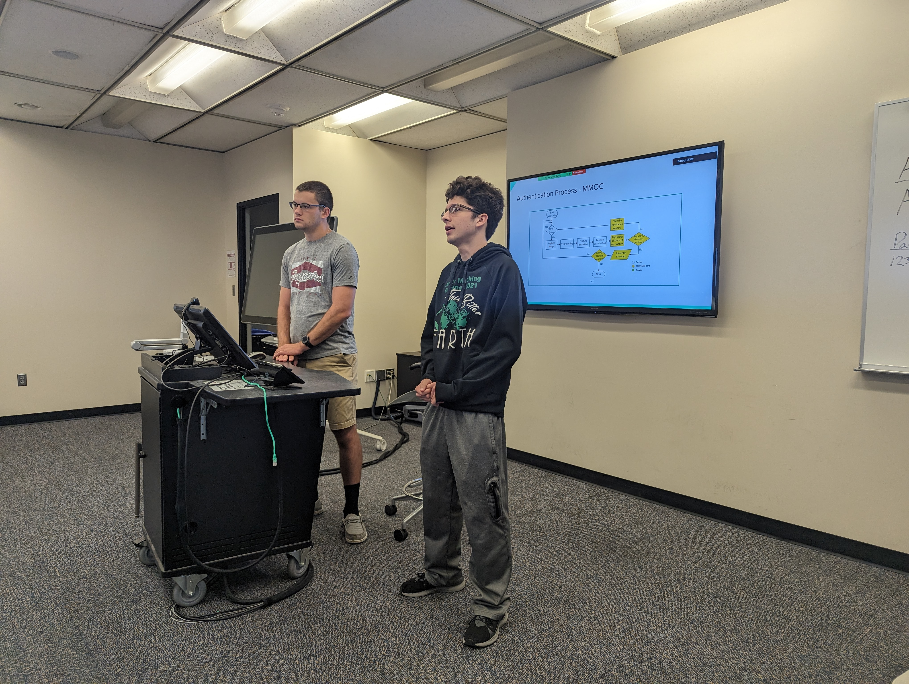

About
Overview The 2023 IUPUI REU Workshop will showcase the research projects conducted during the 2023
Mobile Cloud and Data Security Research Experience for Undergraduates (REU) program at Indiana University-Purdue
University Indianapolis. The focus of the workshop is on data science and cybersecurity, with a special focus on
security related to current Deep Learning techniques. The workshop will be hosted online
on Friday, August 11th, 2023 from 8:45 A.M. to 12:00 P.M. EST. The Zoom link can be found here.
Review ProcessPapers should be submitted by August 9 at 11:59 p.m. EST to Joshua Schoenbachler or
Vinay Krishnan. All submissions will be peer reviewed by two reviewers. The review process will end on August 10
at 4:00 p.m.
Paper FormatPapers should adhere to the ACM manuscript standard, be at least five pages, and be
submitted as PDFs. Related information on formatting can be found at the
REUNS 2023 Conference Website
Committee Members
General Co-Chairs:
David Chen and Ellie Fassman
Website Chairs:
Edwin Sanchez and David Xu
Technical Program Chairs:
Joshua Schoenbachler and Vinay Krishnan
Poster Chairs:
Sanaz Matinmehr and Anthony Weyer
Publicity Chairs:
Kehan Wang and Paul Jiang
Publications
Sorting Ransomware from Malware Utilizing Machine Learning
Methods with Dynamic Analysis
Joshua Schoenbachler & Vinay Krishnan

Abstract:
Ransomware attacks have grown significantly in the past dozen
years and have disrupted businesses that engage with personal data.
In this paper, we discuss the identification of ransomware, malware,
and benign software from one another using machine learning tech-
niques. We collected data samples from repositories on the internet
as well as using a dataset from a previous study that provided a
basis for our approach. We also collected ransomware, malware,
and benign software samples manually from Cuckoo Sandbox™.
We also filtered on certain feature groups to test to see if certain
activity/processes in the infection process could be used to correctly
distinguish ransomware from malware and benign software. These
feature groups represent correlated processes within a running ap-
plication: network activity, PROC memory activity, registry/events
processes, and file interactions. The datasets were analyzed using
several ML models which included Random Forest, SVM, Gradi-
ent Boosting, and Decision Trees using binary classification. The
best classifiers for distinctly identifying ransomware from benign
software were Random Forest and SVC with an F1- score of 86%
and an F1-score of 82% as well as an 85% in overall accuracy for
Random Forest. In addition to ransomware versus benign software,
we also compared malware software to ransomware data. Yielding
a 100% accuracy in performance, Gradient Boosting Classifier and
Decision Trees were the best at distinguishing ransomware from
malware software. This high result may partially be caused by a
smaller malware and ransomware dataset. Overall, we were able
to successfully distinguish ransomware from malware and benign
software.Read More
Evaluating the Impact of Noisy Data on Time-Sensitive Point
Clouds from Millimeter Wave Gesture Recognition Systems
Paul Jiang & Ellie Fassman

Abstract:
Point cloud data gathered through millimeter wave sensors has
garnered increasing attention for its critical applications, including
automotive radars, security systems, and notably, gesture recog-
nition. It provides a non-intrusive and robust approach towards
human-computer interactions; however, its reliance on real-time
data makes resilience of paramount concern. Attacks on millimeter-
wave sensors can have catastrophic effects. From real-time spoofing
to data poisoning attacks or even just imperfect or poor data, sys-
tems based on 2D and 3D point cloud machine learning models can
be extremely vulnerable. Despite this, there exist few studies pri-
oritizing the robustness of time-sensitive point clouds. This study
presents an in-depth examination on the effects of noisy data on
frame based time-sensitive point clouds used in millimeter wave
gesture recognition machine learning models. Noisy data can be
introduced during the training stage where imperfect data is fed to
the model, causing this model to misclassify test-time samples and
lower the overall accuracy of the model. We stage and evaluate the
impact of four different, simple data noising scenarios to observe
vulnerabilities within this system and to emphasize the importance
of robust machine learning models. Noisy databases are particularly
relevant to deep learning systems because these models need large
amounts of data to train, many of which commonly scraped from
the internet with little to no manual inspection. Our findings high-
light the importance to not only dedicate time and research towards
innovations in mmWave gesture recognition, but also towards the
robustness and resiliency of these systems in order to proactively
prevent destructive effects.
Read More
Enhanced Disease Detection via Graph Clustering and
Centroid-based Representations
David Xu & Sanaz Matinmehr

Abstract:
According to the World Health Organization (WHO), 15 mil-
lion people around the world become victims of a stroke
every year. Of those 15 million people, 5 million succumb
to the disease and another 5 million who survive become
permanently disabled. Though it may not be common for
those under the age of 40, anyone can become susceptible to
a stroke, as factors such as high blood pressure can play a
major role increasing one’s risk. It is crucial to identify such
symptoms to discover patterns within a patient that may lead
to a stroke. In this paper, we utilize five different graph clus-
tering techniques to analyze patient data in order to evaluate
and find the most effective and accurate method of detect-
ing a stroke. Patient data from both stroke and non-stroke
patients are used to identify phenotypes, which then form
clusters to uncover overlapping patterns in the symptoms.
Finally, we conclude our discussion with our final thoughts
to the study and other methods that could be evaluated in
the future. Read More
TrustAggFL: Enhancing Federated Learning with Trusted Client
Aggregation for Improved Security
David Francis Chen & Kehan Wang
Abstract:
Federated Learning (FL) has emerged as a promising approach
for training machine learning models across individual devices
while preserving data privacy. However, FL faces many challenges,
specifically a vulnerability to adversarial attacks due to its strict
adherence to ensuring individual client model and data privacy.
To mitigate these issues, dynamic clipping techniques have been
proposed which dynamically adjust the gradient clipping threshold
during model aggregation. However current iterations depend on
specific and often intensive calculations to determine a clipping
threshold which can lead to an over fitting to a specific data set or
attacker model. In this paper, we address the limitations of existing
FL and dynamic clipping approaches by introducing a novel method
that incorporates a group of trusted users during the aggregation
of client models for a global update. By identifying and utilizing
a subset of trusted clients, our method enhances the robustness
of model aggregation against malicious updates. This approach
not only maintains the model’s performance but also improves its
resistance to adversarial influences. We demonstrate the effective-
ness of our proposed method through extensive experiments thus
showcasing its superiority and simplicity in achieving enhanced
model security in federated learning settings.
Read More
Advancing Active Authentication for User Privacy and Revocability with BioCapsule
Edwin Sanchez & Anthony Weyer

Abstract:
Biometric Facial Authentication has become a widely
used mode of authentication in recent years, which can be
attributed to the ever-growing popularity of mobile devices.
With this growth in popularity, there is also a growth in
concern over privacy for biometrics. Along with the issue of
template revocability with biometric data, there is a need for
a system that can provide for these issues while remaining
easy to use and practical. BioCapsule is a system designed
to solve these issues. While BioCapsule has been tested for
its face authentication capabilities, this paper extends the
scheme to Active Authentication, where a user is continu-
ously authenticated throughout a session on a mobile device.
The MOBIO dataset is used for testing, which contains video
recordings of 150 individuals using mobile devices over sev-
eral sessions. We find that the BioCapsule system not only
performs comparably to the baseline system performance,
but in some cases exceeds baseline performance in terms of
False Acceptance Rate, False Rejection Rate, and Equal Error
Rate. We examine these findings to learn about both the na-
ture of the Active Authentication task and how BioCapsule
interacts with this system. We also examine hyperparameters
such as time interval for sampling user facial features, and
window size, referring to how many past samples to average
over with the current sample to determine user authenticity.Read
More